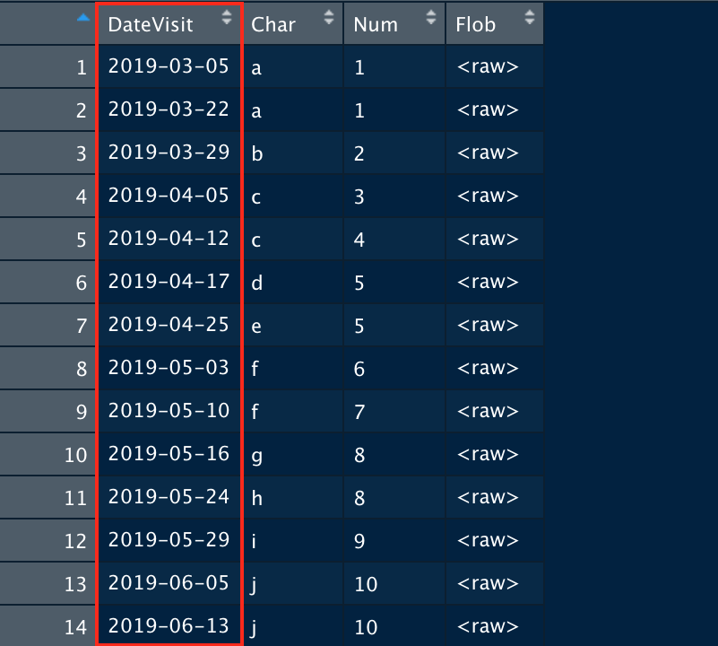
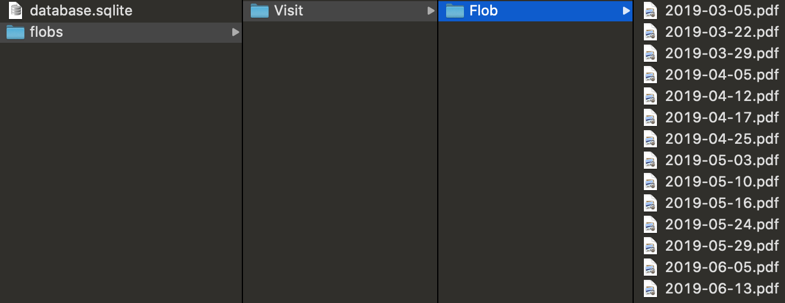
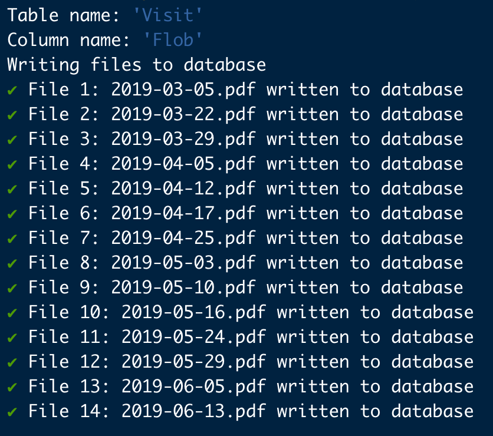

After creating a new version of a database, it can be time consuming to re-populate flobs individually using the slobr app. dbflobr provides functionality to carry out this task automatedly with minimal user input, and provides useful console output to summarize the results. Lets assume you have a database containing one or more tables with Blob columns.
Create a connection to your database and run the function dbflobr::save_all_flobs() providing the database connection and the file path you have chosen for storing the flobs. dbflobr will automatically use the table’s primary key as the file name for each saved flob. In this example, ‘DateVisit’ is the unique primary key

Flobs are stored in sub-directories named after the tables and columns they originated from. This preserves all of the information necessary to repopulate a new version of the database into the correct locations.

After a new version of the database has been created, run the function dbflobr::import_all_flobs(), providing the connection to the new database and the file path to the directory in which all of your flobs are stored. dbflobr will repopulate the database using the file and directory names to import each flob to the correct cell.

If you only want to export and import flobs from particular tables or columns you can use dbflobr::save_flobs() and dbflobr::import_flobs() respectively, providing the additional arguments ‘table_name’ and ‘column_name’ as needed.